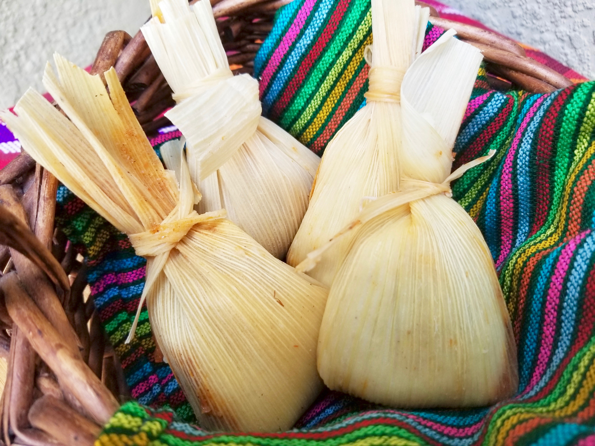

Chuchitos

What Are Chuchitos?
Chuchitos are small Guatemalan tamales made with corn dough. They are stuffed with chicken or pork in a tomato-based sauce called recado.
They are smaller than the Guatemalan tamal colorado and are wrapped in corn husks instead of banana leaves.
Ingredients
For The Recado (Sauce):
- 1 Guaque pepper (guajillo pepper)
- 1 Sambo pepper (poblano peppers)
- 15 Tomatoes
- 4 Miltomates (green tomatoes)
- 2 Red bell peppers
- 1 Medium onion
- 3 Garlic cloves
For The Meat Filling:
- 2 lbs. of chicken, cut into small pieces
- Salt and powdered chicken bouillon to taste
For The Dough (Masa):
- 2 lbs. of instant corn flour
- 2 Sticks of butter, softened
- 3 Tablespoons of vegetable oil
- Salt and powdered chicken bouillon to taste
- 1 lb. of Tusa (dried corn husks)
- Water
Steps
How To Make The Recado (Sauce):
- On a skillet or comal, roast the guaque and sambo peppers. Once roasted, place the peppers in a bowl filled with water for about 20 minutes to reduce their spiciness.
- Get rid of the water and blend the peppers until smooth. If the sauce is too thick, add a splash of fresh water. Pass it through a strainer to remove any seeds. Set aside.
- Use the skillet again to roast the tomatoes, miltomates (tomatillos), garlic, onion, and red peppers. Then, blend until well combined and strain everything to make a rich sauce.
- In a pot, pour the tomato sauce, add the pepper mixture to the sauce, and bring to a boil. If the sauce is too thin, add two tablespoons of corn flour and stir until thickened.
Chicken Meat Filling:
- Cut the chicken into small pieces and add them to a pot with little water. Boil the meat until cooked (about 10 minutes), seasoning with a pinch of salt and chicken bouillon.
- Drain the water and set the chicken aside for assembling.
Time To Prepare The Dough:
- Prepare the dough by mixing the corn flour with water, careful not to use too much water. It is best to add half a cup of water at a time until the batter has reached the desired consistency.
- Add the oil, butter, salt, and chicken bouillon to taste, mixing it with your hands until you get a smooth dough (it should have a soft consistency).
- Cover the dough with a clean, damp cloth to avoid dryness.
How To Assemble A Chuchito:
- Soak the corn husks in hot water (not boiling) for about an hour. Double-check that the husks are completely submerged so they become flexible and easy to fold.
- Place a large spoonful of dough in the center of each tusa (husk). Then make a hole in the middle of the dough with a small spoon. Place a piece of cooked chicken in the center, and pour recado sauce on top.
- Using the same spoon, cover the hole with the dough you placed first. Fold the husk towards the center and upwards, tying with a strap (cut a few strips from a single sheet of the husk as straps to fasten all the wrappings).
- The dough must be well wrapped. If needed, fold an additional piece of husk before tying it. Repeat until all the dough is stuffed and wrapped up.
- In a large steam pot, place the chuchitos with the tied side up. Add enough water to steam them (a couple of inches is enough) and cover with a lid. Cook on low for about 30-60 minutes, checking the water level every 10 minutes or so.
- The dish is ready when the dough is soft and quickly pulls away from the husks. Serve them with a bit of recado (sauce) and a sprinkle of grated cheese on top.